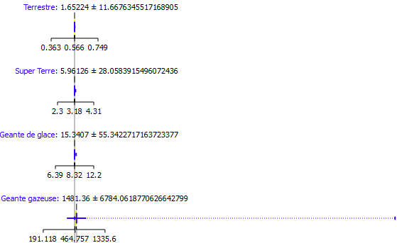

Masse en fonction du type
Analyse des masses des planètes (Unité : masse terrestre) en fonction de leur type
Analyse des masses des planètes (Unité : masse terrestre) en fonction de leur type
Analyse des rayons des planètes (Unité : kilomètre) en fonction de leur type
Analyse des périodes d’orbite des planètes (Unité : année) en fonction de leur type
(Unité : année lumière)
Les boxplots se chevauchent la variable n'est donc pas explicative, elle a été supprimée.
Les boxplots se chevauchent la variable n'est donc pas explicative, elle a été supprimée.
Les boxplots se chevauchent la variable n'est donc pas explicative, elle a été supprimée.
Les boxplots se chevauchent la variable n'est donc pas explicative, elle a été supprimée.
La corrélation étant très élevée, il vaut mieux supprimer une des deux variables (ici on a décidé de supprimer rayon d’orbite) pour alléger les données et limiter la pollution